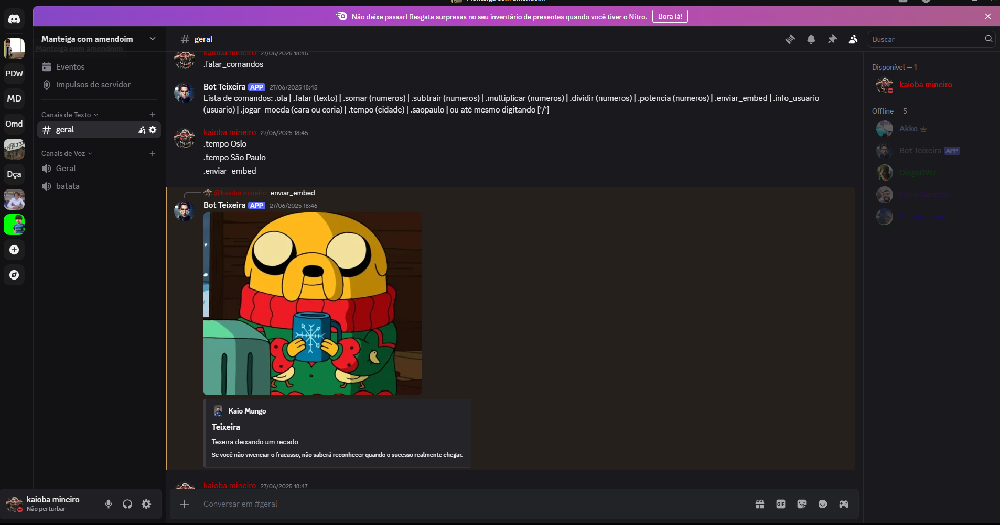
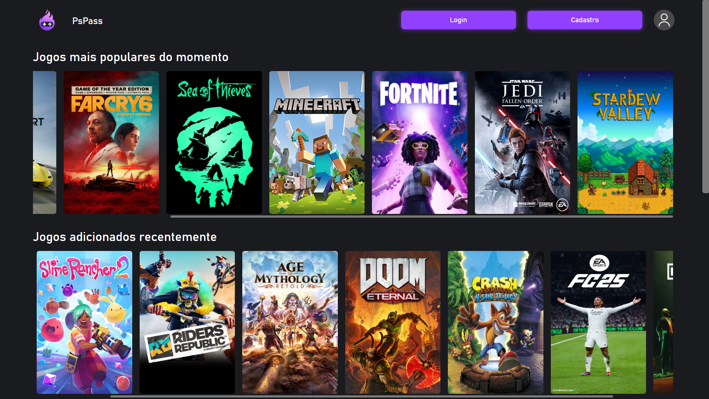
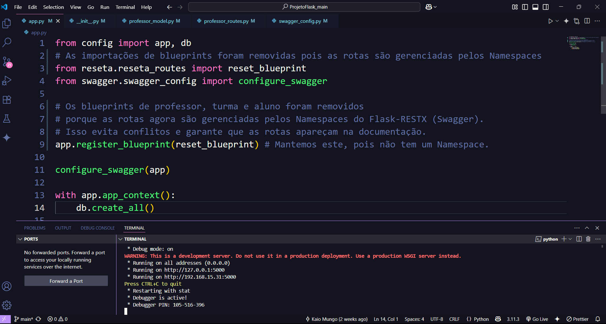

Kaio Mungo
Desenvolvedor de Sistemas
Desenvolvedor de Sistemas
Olá! Me chamo Kaio Mungo e sou estudante de Análise e Desenvolvimento de Sistemas na Faculdade Impacta. Tenho grande interesse pela área de tecnologia e estou em busca da minha primeira oportunidade como desenvolvedor júnior ou estagiário.
Já realizei diversos cursos de programação pela Fundação Bradesco e tenho conhecimentos sólidos em HTML, CSS, JavaScript, Git, Python e banco de dados. Também estou aprendendo frameworks como Flask e React, além de praticar projetos próprios para evoluir minhas habilidades técnicas.
Possuo inglês em nível intermediário/avançado, o que me permite consumir documentação e acompanhar conteúdos internacionais com facilidade. Também tenho facilidade com comunicação, trabalho em equipe e estou sempre disposto a aprender.
Meu objetivo é crescer profissionalmente e contribuir com soluções criativas e eficientes dentro de uma equipe de tecnologia.

Discord bot realizado em python, totalmente interativo com diversos comandos.

Catálogo de jogos completo, integrado com API de cadastro de conta de usuário.

API com flask usando Python, GRUD interativo para um sistema escolar(ALUNO|PROFESSOR|TURMA).